岛屿变大 → 加入「强制搬运」用于测试
岛屿规模做大后，验证用的 Mii 容易离得太远——程式组加入了「强制搬运」当作 Debug 工具。
结果在测试过程中，开发者忍不住说出来：
「希望这个 Mii 和那个 Mii 能一起玩。」
—— 这个 Debug 功能，就这样成为了正式玩法。
一座小岛、一群 Mii,
以及 9 年时间打磨出的「随心所欲」
你住进一座小岛，把现实里的朋友、家人、自己变成 Mii ——
然后看着他们在岛上自己生活。
玩家把熟人关系、圈内梗和个人想象放进游戏。
它们不会完全听命于玩家，而是按照自己的个性在岛上行动。
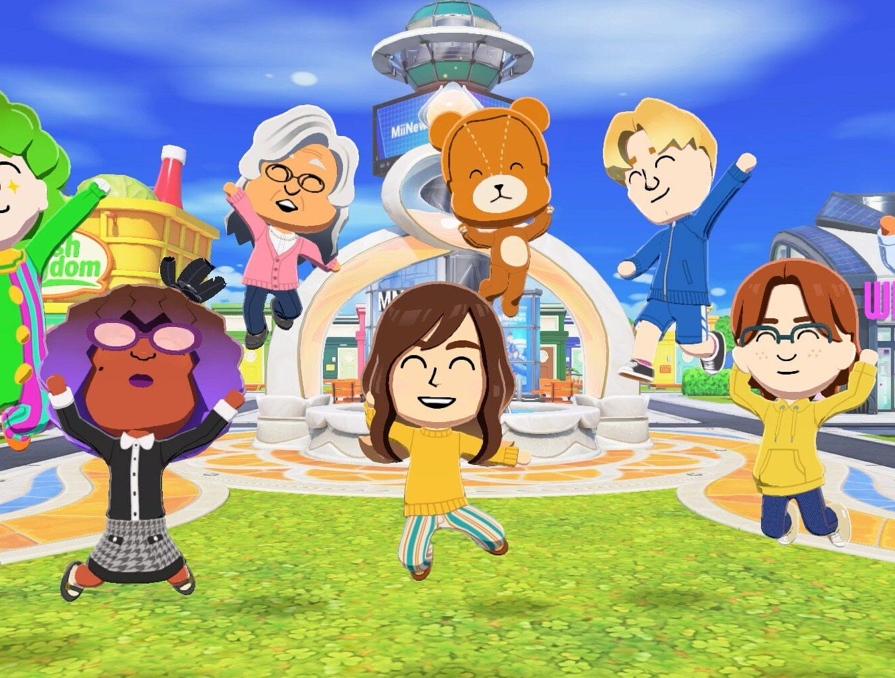
从 DS 到 Switch，
16 年的系列血脉
不是分身，
是「拥有人格的生物」
玩家创造一切，
Mii 来决定怎么用
6–7 年开发，
9 年份的圈内梗
朋友收集系列 16 年的进化与等待。
一个被任天堂自己称为「究极小圈子的圈内梗软体」的奇特血脉。
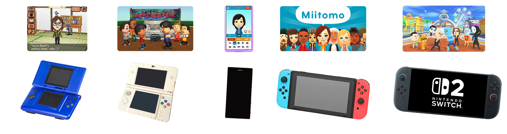
「明明想让他们做更多事，
可是我已经没有新东西可以让这些 Mii 做了……」
高桥监督的开发宣言：保留系列灵魂，但每一行代码、每一个部件全部重做。
「Tomodachi Collection 的玩家不只是把 Mii 当成自己的分身，
而是会对 Mii 这个『生物』投放情感。」
3DS 因机能限制只能用「公寓大楼」承载 Mii,Switch 终于能让大量 Mii 同时在岛上活动,结合新的mii创作系统，你几乎可以实现你脑海中的所有画面。
系列定位是「究极小圈子的圈内梗软体」。沿用旧路只能比道具数量，最终生厌。UGC 让玩家自己制造新梗，乐趣无限扩展。
从「定义 Mii」到「实现 Mii」，
看团队如何把一个虚拟角色，
设计成值得玩家持续牵挂的存在。
Switch 性能远超 3DS —— 画面、声音、动作都能升级。
但团队最大的难题反而是怎么让 Mii 看起来、听起来、动起来，还是那只玩家熟悉的 Mii。答案在于「克制的升级」。
不改变 Mii 的核心特征，如：五官风格、手脚形状、身体比例，但把每一个部件的结构与设计都从头绘制。

峰岸音效总监在为 Mii 做声音时最难的事，不是让它更真实，而是知道在哪里收手。
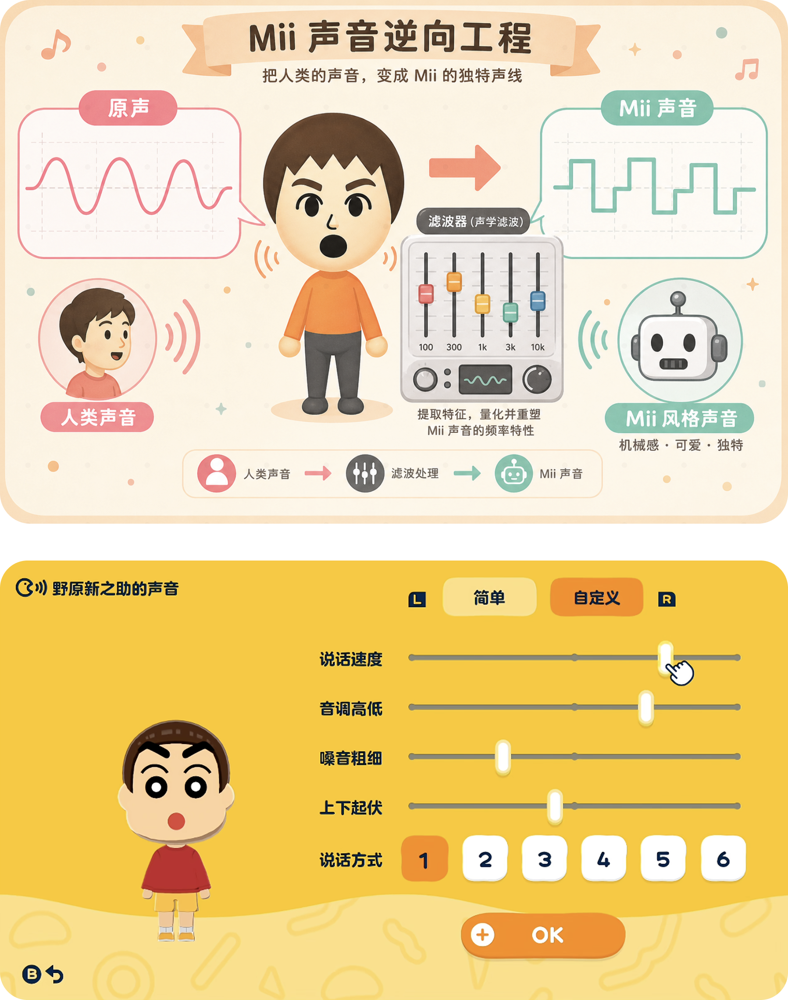
玩家输入名字、歌词或奇怪的句子时，算法会根据目标语言的语法、断句和发音规则，实时生成连续语音。玩家可以通过滑块直接调节音调、速度、音质、口音和抑扬顿挫。
玩家投放的不是控制欲，
而是家长般的目光
同一件事、同一句话，
不同 Mii 会有不同反应
Mii 抛梗，
吐槽留给玩家自己
玩家不"控制" Mii，而是它发出需求，玩家来响应 —— 这是 Tomodachi 系列最核心的关系。和一般生活模拟（动森、星露谷）不同，你不需要打工赚钱，只需要看着它们过得好不好。
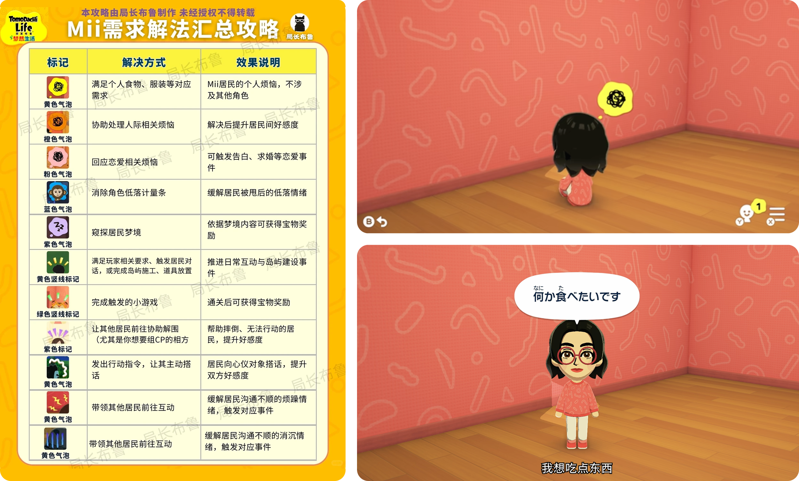
每只 Mii 都有自己的性格、喜好与行动倾向。玩家输入同样的内容，最后会因为 Mii 的个性不同，长出完全不同的反应。
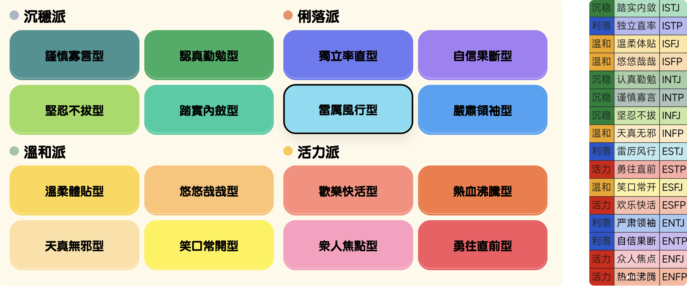
Mii 像一个认真演荒诞剧的演员，用夸张的肢体动作和剧情演绎无厘头的小岛生活。
Mii 如果只是听从指挥就没意思了。玩家能做的，都是「轻轻种下种子」的动作，剩下的交给 Mii 自己决定。
只负责搬动，会不会互动由 Mii 决定。
送什么是你的，怎么用是 Mii 的。
mii有时会问你一些问题，你的回答会在意想不到的时刻冒出来。
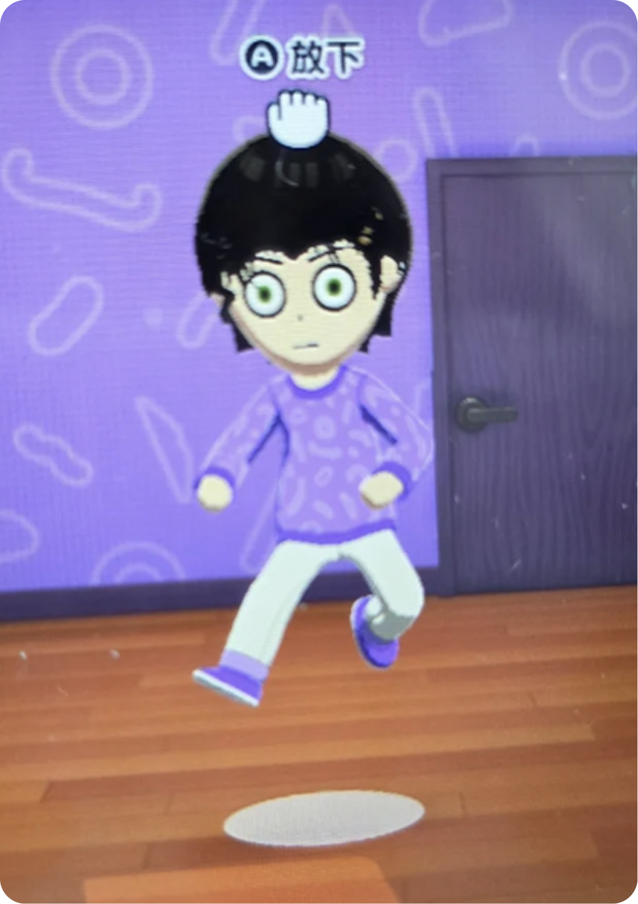
「把开发团队准备的东西，
与玩家自行制作的东西结合起来，
乐趣就会无限扩大。」
面容 / 肤色 / 涂鸦 / 声音 / 性别 / 取向
16 主性格 + 可送的小习惯
食物 / 衣服 / 书 / 游戏 / 宠物
丰富的小剧场模板，不同组合带来不同惊喜
「Tomodachi Collection 的概念是『究极小圈子的圈内梗软体』。
能让玩家自由制作喜欢的东西，是这款游戏的核心理念」。
不只是选择部件——还能在 Mii 脸上直接画。
胡子、雀斑、纹身、彩妆、动物特征……任何你想绘制的细节都可以实现。
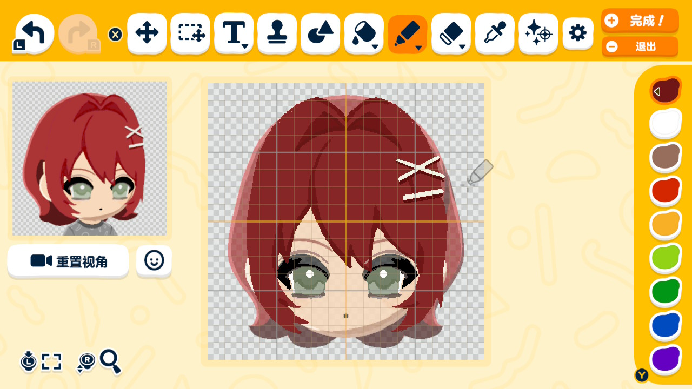
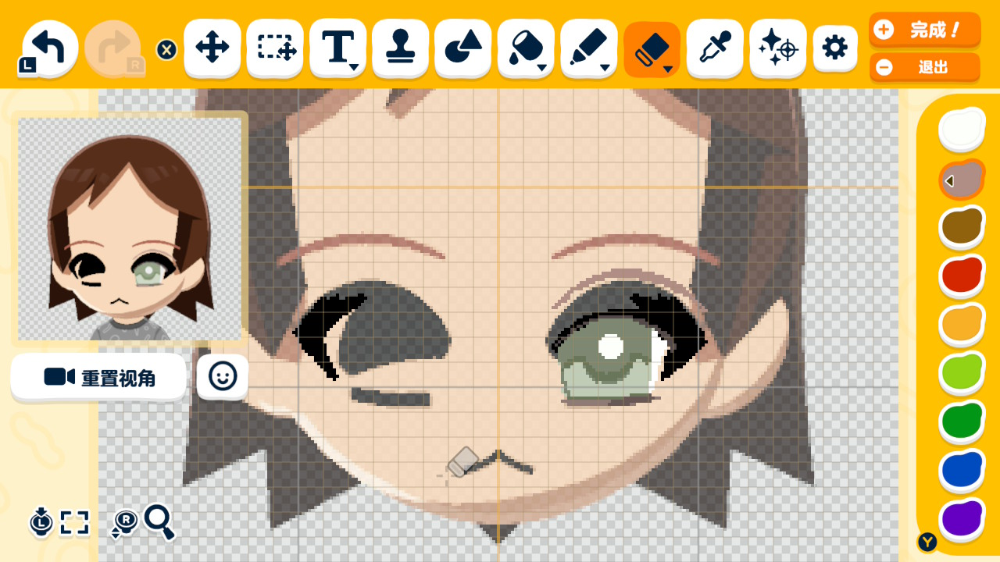
「特征遗传系统」遇上玩家手绘：画了猫脸的mii真的生出了带有猫脸的宝宝，因此有了圈内梗：“这孩子从出生就带着面部彩绘”

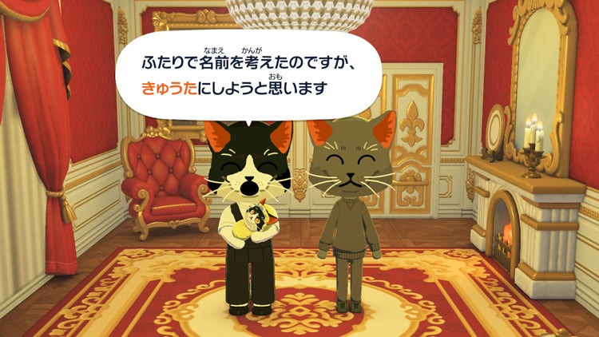
为不擅长制作 Mii 的玩家准备的全新功能——回答问题，「啪」的一声生成一只 Mii。
速度、音调、嗓音、起伏...甚至可以通过参数的调配实现一些讲方言的效果。
这里先保留和 slide 20 一致的版式，后续可直接替换标题、说明和图片内容。
这里先保留和 slide 20 一致的版式，后续可直接替换标题、说明和图片内容。
这里先保留和 slide 20 一致的版式，后续可直接替换标题、说明和图片内容。
这里先保留和 slide 20 一致的版式，后续可直接替换标题、说明和图片内容。
这里先保留和 slide 20 一致的版式，后续可直接替换标题、说明和图片内容。
这里先保留和 slide 20 一致的版式，后续可直接替换标题、说明和图片内容。
「除了本人、家人、朋友等真实人物之外，也会有玩家想制作原创角色。
因此我们尽可能让玩家透过各种方式制作出任何样子的 Mii。」—— 高桥 龙太郎
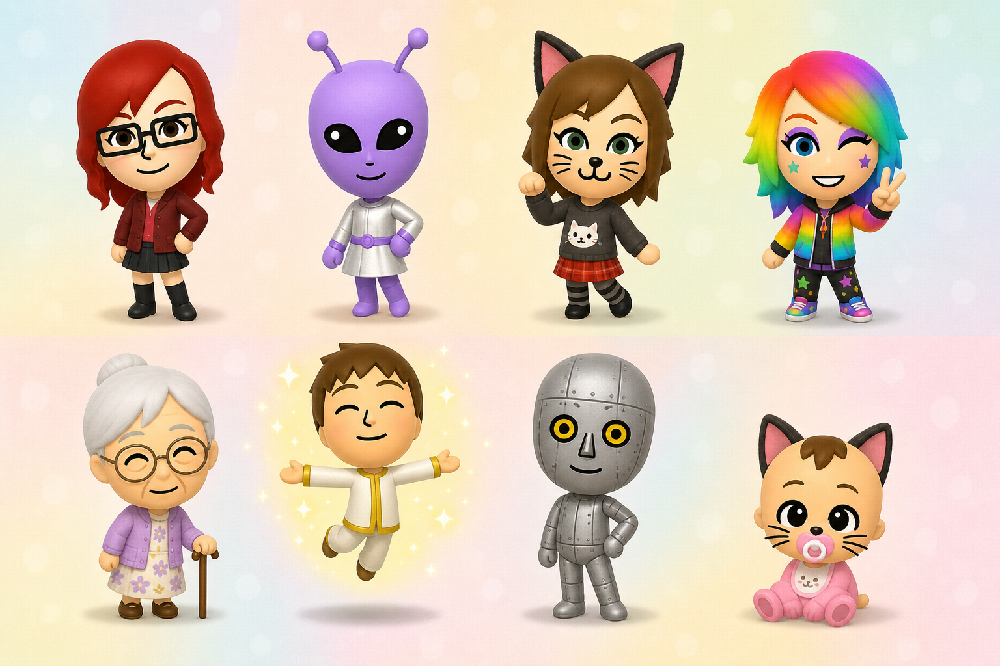
把我的猫、oc、自己和大学老师都搬进了岛上。
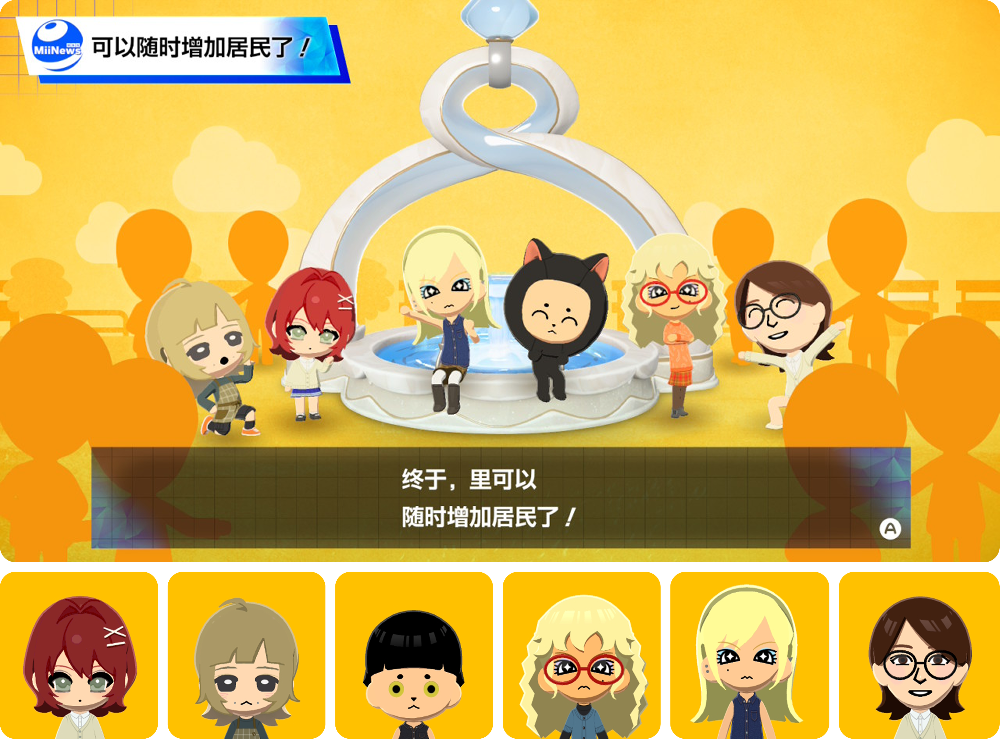
决定 Mii 的对话风格、行动倾向。覆盖大多数人格类型。
无法塞进 16 种主性格里的细节，做成可送给 Mii 的礼物。
「『微个性』可以说是本作的一大发明。
你自己决定加什么，才能更像本人——而那就是『圈内梗』的起点。」
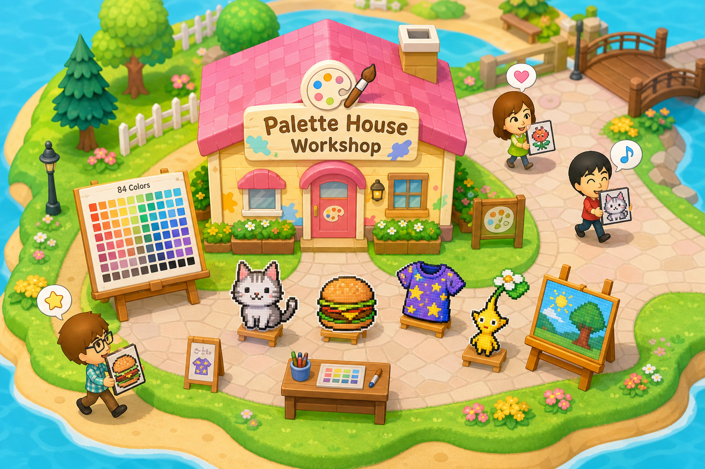
「能送给 Mii 最大的东西，就是『岛』本身。」
「让所有工作人员都能自由写下自己的想法。
当有人写下有趣的想法时，不同岗位的人就会记下，并把它实现。」
不分岗位 / 资历，
都能贴到公告板上
「由我来统筹负责！」
主动推动落地
把热情调整到
现实可行的程度
任天堂其实是做了一套剧情版的 Figma 组件库——把"剧情"拆成可复用的外壳 + 可替换的变量。
不为每个人量身定制电影，只做完全固定的纯动画外壳：
· 【A 冲向 B 告白，B 满脸通红答应】
· 【吃到绝顶美味，背景瞬间飞向宇宙】
外壳里能变的地方都留成槽位：
· 下发角色：随机塞进【你的老板】【你的前任】
· 下发台词：自动读取你输入的恶搞文本
运行时，算法把固定外壳和玩家输入的变量随机拼在一起——同一个舞台，永远是不同的演员和台词。
从 Debug 工具到核心玩法，
从公告板到 Mii 新闻，
还有藏在访谈里 9 年份的圈内梗。
岛屿规模做大后，验证用的 Mii 容易离得太远——程式组加入了「强制搬运」当作 Debug 工具。
结果在测试过程中，开发者忍不住说出来：
「希望这个 Mii 和那个 Mii 能一起玩。」
—— 这个 Debug 功能，就这样成为了正式玩法。
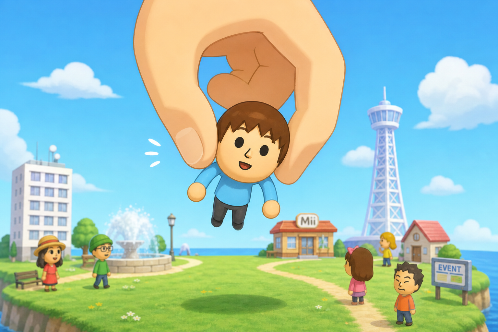
把家人朋友、还有自己，都搬进了岛上。
看看大家的脑洞——明星、二次元、宠物、神话角色都能塞进岛上。
从婚礼现场、偶像演唱会到深夜动物园：UGC 把岛屿变成开放剧本。
开发团队在 UGC 自定义宠物里亲手做了 Pikmin，让 Mii 一起散步玩耍。「我们做了很多这种内部的圈内梗。」—— 高桥
UGC 道具中真的有「高桥龙太郎的员工证」与「薪水袋」。开发者自己玩得很嗨，希望玩家也能制造类似的圈内梗。
放屁音效重录过非常多次。曾做出过爆炸式的「砰！」——「这个太写实了」之类的意见层出不穷。
团队成员重现了自己的任天堂办公室，让开发人员的 Mii 住在里面。每张桌子都是一只 Mii 的家。
硬件、引擎、画面可以升级——但是否升级取决于你的设计对象「应当是什么样子」。
这个共识比任何 KPI 都重要。
玩家完全指挥 Mii，乐趣就消失。
类比到产品工作：不要替用户做所有决定。
给系统留出「自然反应」的空间，故事才会发生。
玩家创造一切，但 Mii 决定怎么用——
这两个动作之间的张力，才是 UGC 真正的引擎。
设计 UGC，先设计「使用 UGC 的对象」。
欢迎一起聊聊：你最想做成 Mii 的那个朋友，
会拥有什么样的「微个性」？